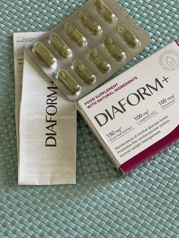

Alec Baldwin: «Nimeni nu este imun la diabet»
Fanii celebrului actor american Alec Baldwin sunt îngrijorați de dispariția sa bruscă din toate emisiunile. Schimbări bruște de aspect, un minim de informații din sursa primară - toate acestea dau naștere la multe zvonuri. Într-un interviu acordat mediafax.ro, domnul Baldwin a spus pentru prima dată tot adevărul despre boala sa!
Mai devreme, Baldwin apărea mereu în diferite emisiuni în formă bună. Dar nu demult telespectatorii l-au văzut pe actorul care s-a îngrașat considerabil.
Primii care au dat alarma au fost fanii lui turbați. În internet au început să circule informații contradictoare despre faptul că dl Baldwin a renunțat la un stil de viață sănătos, la diete și sport. Apoi, au apărut și mai multe postări pesimiste spunând că actorul avea o boală cerebrală gravă care să fi cerut o terapie cu remedii hormonale. Puțin mai târziu, chiar în direct, actorul a recunoscut că, deși avea o boală gravă, dar nu a fost fatală. Și asta e tot. Până astăzi, dl Baldwin nu a comentat informațiile scandaloase, nici boala sa, nici vindecarea sa miraculoasă. Cu toate acestea, acum dl Baldwin a decis să spună adevărul și să respingă zvonurile.
Alec Baldwin despre cum stau lucrurile în realitate:
— Baldwin, am urmărit interviul nostru de acum doi ani, la finalul căruia am te-am întrebara: „Ce urmează? În cele din urmă veți părăsi profesia?" . Adică, am avut dreptate?
— (zâmbește) Se pare așa. Am răspuns atunci: când încrezi în Dumnezeu, nu te temi de nimic. Dar acum câțiva ani nu aveam idee prin ce va trebui să trec. Cred că Dumnezeu mi-a trimis acest test dintr-un motiv. M-am întărit. Și acum pot ajuta mulți oameni care trec prin același lucru prin care a trebuit să trec eu.
— Ce ți s-a întâmplat? Această problemă este acum îngrijorătoare pentru întreaga țară.
— Am avut diabet de tip 2. Așa e... M-am simțit rău la platorul de filmări, am fost luat de ambulanță și iată diagnosticul. Am fost șocat, panicam. Mă consideram o persoană sănătoasă....Am început să mă gândesc la bătrînețe, cât de mult se va schimba viața mea acum, despre lucruri neterminate. Acum, cine are nevoie de mine cu diabet? Nu știu de ce, dar mi-am închipuit cu ceasul deșteptător în buzunar și cu injecții în stomac.
— Spui că diabetul nu este o boală mortală. Mi se pare că tu ești optimist. De unde ai avut astfel de gânduri mohorâte? Păreai să-ți iei adio de la viață.
— Exact. Mi-am luat rămas bun de la viața mea obișnuită activă. Viața cu care sunt obișnuit. Știam că diabetul va schimba totul. Întregul program, obiceiurile și viața în general vor trebui să fie subordonate zahărului din sângele meu. În acel moment, chiar am început să-mi pierd credința, nici eu încă nu mă pot ierta.
— Baldwin, dar nu spuneai nimic tot acest timp. Mulți oameni care te iubesc și te respectă au fost îngrijorați de tine. De ce?
— Nu stiu. Nu am putut vorbi despre asta. Nu vream să provoc milă sau să fiu ajutat într-un mod special. Am încercat să mă înțeleg, să fac față.
— Și ce a urmat?
— Apoi a avut loc o examinare, lupta cu boala. Nu te voi plictisi cu detalii, toate stăruințele nu au adus niciun rezultat. Chiar și atunci am început să disper. Îmi amintesc că am citit un interviu cu un renumit specialist în domeniul endocrinologiei, nu-mi amintesc acum numele, de la clinica din Tel Aviv. El a spus că s-a săturat să corecteze greșelile specialiștilor noștri, că avem metode învechite și, în general, diabeticii pur și simplu nu au nicio șansă de a fi sănătoși, deoarece farmaciștii noștri vor doar banii și nu le pasă de rezultat. M-am supărat foarte mult. Da era sentiment dublu. Pe de o parte, datorită profesiei mele, i-am cunoscut pe mulți dintre specialiști talentați, cinstiți, gata să lucreze gratuit pentru a ușurarea stării. Pe de altă parte, Israelul are una dintre cele mai bune clinici private , iar acel specialist este recunoscut la nivel internațional în acest domeniu. Bineînțeles, la început am fost sigur că voi găsi un produs pentru a învinge diabetul în patria mea, în SUA. Dar speranțele mele nu s-au justificat. Apoi am avut filmări îndelungate aici, în România, iar aici am continuat să caut metoda care o să mă ajute. Am crezut în metodele tradiționale. În cele din urmă, tocmai această credință aproape că m-a ucis și am înțeles că specialistul israelian are dreptate.
— Acum nu mai crezi în mijloace farmaceutice?
— Așa și așa. Am consulta mulți specialiști. Mi s-au oferit diverse mijloace, în principal pe bază de metformină. Le-am aruncat cu sume uriașe de bani. Trusa mea de prim ajutor era plină cu diferite pachete strălucitoare. Compoziția chimică a sângelui a fost, de asemenea, completată, nu-mi pot imagina cu ce anume! Dar îmbunătățirea a fost scurtă. De îndată ce cursul de administrare s-a încheiat, zahărul a crescut. Credeam că diabetul este acum viața mea. Dar știți, sunt actor. Am fost învățat să înțeleg temeinic problema și abia apoi să trag concluzii. Așa că am început să studiez problema. Am fost ajutat cu aceeași metodă ca și toți diabeticii din SUA și din țara voastră - au încercat să scadă nivelul glucozei din sânge. Dar aceasta este o abordare complet greșită! Toți cei msi inteligenți savanți din domeniul endocrinologiei spun despre despre asta. Dar, din păcate, în România totul este altfel, e propria mafie farmaceutică. În general, glucoza a scăzut, dar apoi a crescut din nou. Și aceste salturi de glucoză aproape că m-au ucis. Au început probleme cu vederea, cu sistemul urinar. Am început să obosesc foarte tare. Aproape că mi-am piedut rolul, pentru că auzul a început să scadă și nu-i mai auzeam pe colegi. În acel moment, mi-am dat seama că pentru a învinge diabetul, nu este nevoie să scad nivelul glucozei, ci să îl normalizez. O înțelegeam eu, dar nu cei la care am fost la consultații...
Apoi am cerut o întâlnire cu Dumitru Olaru, un renumit specialist ăn domeniul endorcinologiei. Mi-am împărtășit gândurile. Și el le a confirmat! Într-adevăr, singura modalitate de a gestiona diabetul este normalizarea nivelului glucozei și scăderea rezistenței la insulină.
— Ai aflat multe cuvinte noi!
— Nu poți face fără asta. Diabeticii mă vor înțelege. Așadar, domnul Olaru mi-a explicat că diabetul este un diagnostic foarte profitabil pentru companiile farmaceutice și alți specialiști pe care tocmai aceste companii îi „hrănesc”. Da, rezultatul investigației mele personale este dezamăgitor - noi, diabeticii, suntem pur și simplu victime, cărora li se vând remedii absolut iutile. ÎN Laboratorul Independent pentru Cercetarea Diabetului acum 10 ani a fost dezvoltată și testată o metodă nouă împotriva diabetului. Există, de asemenea, un remediu care elimină simptomele diabetului în 60% din cazuri, iar în rest își reduce semnificativ manifestările, dar, din motivele menționate, nu se vinde în farmacii!!!
Minunea care m-a salvat ... Mai degrabă, miracolul pe care Dumnezeu mi-a dat este . Dl Olaru m-a liniștit imediat, spunând că este un complex de componente complet naturale, nu provoacă efecte secundare, este SIGUR pentru organism! Remediul are o eficiență bună datorită conținutului de extract din frunze de măslin, substanțele active ajută la reducerea zahărului din sânge și stimulează producția de insulină, care este capabilă să distrugă excesul de glucoză din sistemul sanguin. Pe lângă acesta conține și vitamina C, arginină și resveratrol D. Ele ajută organismul să stabilească un metabolism adecvat, cresc absorbția nutrienților, activează mecanismele de apărare.
— Este o veste senzațională! Este datoria ta profesională și umană să informezi întreaga lume despre acest remediu!
— Cine mă va lăsa?! Singura speranță este interviul acesta!
— Desigur, nu avem cenzură! Spune totul. Cum funcționează remediul? Care este tehnica? Și, cel mai important, cât costă?
— Cum functioneazã? (zâmbetșe). face singurul lucru corect și necesar - normalizează nivelul glucozei! În plus, ajută la reducerea rezistenței la insulină, normalizează urinarea, normalizează procesul de carbohidrați, contribuie la restabilirea funcțiilor ficatului și ale rinichilor, ceea ce, după cum știți, după ce ați luat multe produse, a fost foarte important pentru mine.
— Înțeleg că ai trecut un ciclu de administrare cu ...
— Desigur! Aceasta a fost poate cea mai corectă decizie din viața mea. Tot ceea ce am reușit să învăț despre diabet în timpul bolii mele, toate întrebările și problemele acumulate au fost rezolvate de . Am trecut repede, în doar câteva luni. Acum mă simt minunat. Au dispărut toate simptomele diabetului și, cu ajutorul lui Dumnezeu, m-am întors la viață normală și la lucrul meu iubit.
— Baldwin, cea mai importantă întrebare pentru majoritatea oamenilor este prețul: cut costă să scapi de diabet?
— Puteți scăpa de simptomele diabetului acum pentru ! Specialiștii europeni prescriu tuturor celor care au nevoie de el. Dați un link către site-ul oficial al acestui remediu și lăsați oamenii să-l comande. Procedura de comandă este foarte simplă, dar din câte am înțeles, stocul remediului este limitat. Deci, toți cei care doresc să comande ar trebui să se grăbească.
— De ce ai spus că toți oamenii ar trebui să știe despre ?
— Deoarece este un remediu unic. Este recomandat tuturor persoanelor peste 40 de ani. Pentru sănătatea generală a corpului, pentru normalizarea zahărului și nu numai pentru eliminarea, ci și pentru prevenirea diabetului!
— Mulțumesc, voi reține. Ei bine, să rezumăm. Întrebarea mea tradițională este: ce urmează?
— Bineînțeles, voi continua cu bucurie să lucrez, am multe idei și gânduri noi. Sunt recunoscător soartei și Dumnezeului pentru această boală și pentru acele schimbări miraculoase care mi s-au întâmplat datorită acestui remediu. Înseamnă că ar fi trebuit să se întâmple. Acum voi ajuta persoanele cu diabet. Oamenii cărora le pasă de sănătatea lor și doresc să evite această boală.
— Poți contacta direct toți cititorii noștri!
— Diabetul este o boală cu adevărat înfricoșătoare. Afectează mii de oameni în toată țara. Cine e la rînd?! Și, cel mai important, toți acești oameni nu fac decât să agraveze diabetul, pierd timpul într-o căutare fără sens a unor remedii și metode miraculoase. Oamenilor, nu vă pierdeți timpul! Obțineți ajutorul necesar chiar acum. Pentru ! Remediul este încă disponibil. vă va ajuta să curățați corpul de glucoză, nu numai că preveniți consecințe periculoase ale diabetului, dar vă vindecați și corpul în prezent. Zahărul este într-adevăr o moarte dulce, iar zahărul din sânge este cu și mai teribil. Distruge organele interne, deprimând bunăstarea generală. Prin urmare, după doar câteva zile de administrare a veți simți schimbări pozitive foarte repede. Dragi prieteni, aveți grijă de sănătatea voastră! Luați măsuri la timp! Dumnezeu să vă binecuvânteze!
Comentarii:
Alex Cosniceanu, Craiova
Cât timp mai răbdăm?! Există un remediu pentru diabet, eficient, dovedit! Iar noi continuăm să mâncăm niște pastile inutile și scumpe! Oamenii în cele din urmă mor de o zgârietură pe picior!
Diana Săndulescu, Timișoara
Baldwin, ești un actor minunat și întotdeauna mi-ai plăcut. Și acum mi-ai devenit și mai apropiat. La urma urmei, am și eu diabet de tip 2. Am încercat deja totul! Nu există deloc nicio speranță, dar am încredere în tine. Simt că nu vei înșela. Am comandat pe site pentru . Voi crede într-un miracol!
Cătălin, Buzău
Am 50 de ani. Am aflat despre acum 2 ani, și
m-a salvat. Diabetul a dispărut și nu se mai întoarce!
Oamenilor, îl susțin pe Baldwin. Nu pierdeți timpul și
fiți sănătos!

Ion Pitaru, Văslui
Baldwin, ce păcat că ai trecut prin asta. Și este minunat că te-ai vindecat!
Oanna Matei, Sinaia
Baldwin mi s-a părut întotdeauna amabil și un pic misterios. Acum văd că nu m-am înșelat. O persoana corectă, credincioasă! Vă mulțumim pentru sinceritate și mult succes.
Ana-Maria, București
Bună tuturor.Pe site-u se scrie că a mai rămas foarte puțin remediu! Se pare că avem o mulțime de diabetici! I-am comandat mamei, ei au spus că livrarea se face prin curier.
Daniel Mihăilă, Bacău
Diabetul este o boală cu adevărat înfricoșătoare. Mă deranja cel mai mult urinarea frecventă. Este un coșmar. Și somnolența mă chinuia. Adică, ori dormi, ori urinezi. m-a salvat fără exagerări. Acum diabetul este în trecut și sunt fericit.
Alina, Craiova
Am cheltuit o grămadă de bani pe pastile, probabil, ai putea cumpăra un vapor. Aceleași remedii despre care vorbește Baldwin. Nu știu cum se descurcau rinichii... Dar am avut noroc pe vremea mea. Am un specialist bun. M-a sfătuit . Acum îi mulțumesc în fiecare zi. Și în fiecare zi mă bucur de viață! Dacă aveți probleme similare sau dacă sunteți expus riscului, comandați . Nu vă mai faceți griji! Încercați ! Ajută cu adevărat!
Consumatorul are dreptul sa notifice in scris comerciantului ca renunta la cumparare, fara penalitati si fara invocarea unui motiv, in termen de 10 zile lucratoare de la primirea produsului sau, in cazul prestarilor de servicii, de la incheierea contractului.
Ion Rebreanu, București
Mulțumesc mult pentru . Am fost mereu îngrijorat de nivelul zahărului, am avut deja diabetici în familie. L-am comandat imediat după ce am citit acest articol. Slavă Domnului, am reușit să-l iau pentru , site-ul afirmă că nu a mai rămas prea mult. Am administrat remediul doar de o săptămână, dar simt deja schimbări pozitive! Somnolența a dispărut, am devenit mai vesel!
